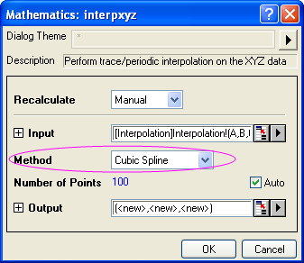
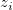
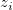
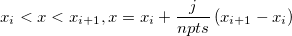

XYZ-Spuren interpolieren
Math-XYZ-TraceInterp
Beschreibung
Die X-Funktion interpxyz führt eine zweidimensionale Interpolation für Daten durch, die eine gewisse Periodizität aufweisen. Gewöhnliche Interpolationsmethoden führen sogenannte Berechnungen der "nächsten Nachbarn" durch, die über die Möglichkeit verfügen, Trends in zyklischen Daten zu ignorieren. Die Spureninterpolation für die Kurve wird auf Basis der Zeilenindexnummer ausgeführt, so dass der sequenzielle Aspekt der Daten erhalten bleibt. Wählen Sie eine von drei Methoden: Linear, kubische Spline und kubische B-Spline.
Um eine Spureninterpolation der XYZ-Daten durchzuführen:
- Wählen Sie Analyse: Mathematik: Spuren Interpolieren. Der Dialog interpxyz wird geöffnet.
- Bestimmen Sie die Eingabe und die gewünschte Methode sowie die Anzahl der Punkte.
- Durch Klicken auf OK werden drei neue Spalten, die interpolierte XYZ-Werte enthalten, zu dem ursprünglichen Datenarbeitsblatt hinzugefügt (weitere Ausgabeoptionen sind verfügbar).
Dialogoptionen
| Neu berechnen |
Bedienelemente zur Neuberechnung der Analyseergebnisse
Weitere Informationen finden Sie unter Analyseergebnisse neu berechnen.
|
| Eingabe |
Legt den zu interpolierenden XYZ-Bereich fest. Hilfe zum Festlegen von Bereichen finden Sie hier: Eingabedaten festlegen
|
| Methode |
Legt die Interpolations-/Extrapolationsmethode fest.
- Linear
- Die lineare Interpolation ist eine schnelle Methode zum Schätzen eines Datenpunkts durch Erstellen einer Linie zwischen zwei benachbarten Datenpunkten. Diese Methode ist im Allgemeinen weniger genau als rechenintensivere Methoden.
- Kubische Spline
- Diese Methode teilt die Eingabedaten in eine gegebene Anzahl von Stücken und passt jedes Segment mit einem kubischen Polynomial an. Die zweite Ableitung von jeder kubischen Funktion ist auf gleich Null gesetzt. Wenn diese Grenzbedingungen erfüllt sind, kann eine gesamte Funktion stückweise erstellt werden.
- Kubische B-Spline
- Diese Methode teilt die Eingabedaten auch in Stücke auf. Jedes Segment wird mit den diskreten Bezier-Splines angepasst.
|
| Anzahl der Punkte |
Die Anzahl der interpolierten Punkte
|
| Ausgabe |
Legt die Ausgabe des XY-Datenbereichs fest.
|
Beispiele
- Importieren Sie die Datei Interpolation.dat, die sich im Ordner <Origin-Installationsverzeichnis>\Samples\Mathematics\ befindet.
- Markieren Sie Spalte C und setzen Sie die Spaltenzuordnung auf Z. Wählen Sie dann Analyse: Mathematik: Spuren interpolieren im Origin-Menü, um den Dialog zu öffnen.
- Beachten Sie, dass im Zweig Eingabe der passende Datenbereich eingegeben wurde. Wählen Sie die Interpolationsmethode Kubische Spline.
- 
- Klicken Sie auf OK, um die Interpolation durchzuführen.
Algorithmus
Im Allgemeinen werden zwei nebeneinander liegende Datenpunkte so interpoliert, dass die Anzahl von Datenpunkten in dem endgültigen Ergebnisdatensatz gleich der Variable Anzahl der Punkte ist.
Der Algorithmus sieht im Detail folgendermaßen aus:
Es sei eine Sequenz von eindeutigen Datendreiergruppen (/math-0a645fc515fe6128f91758f996ebe307.png "x_i\,") ,
, /math-b19930487b77bb2b470dafd74c4e60fa.png "y_i\,") ,) gegeben, wobei i = 0, 1, ... n-1:
,) gegeben, wobei i = 0, 1, ... n-1:
Für 
Für /math-02fa42913b4fdf4c28452e69ae4fb6ba.png "y_i<y<y_{i+1},y=y_i+\frac j{npts}\left( y_{i+1}-y_i\right)")
Für /math-acf2ac4544594daccad6f286d3999502.png "z_i<z<z_{i+1},z=z_i+\frac j{npts}\left( z_{i+1}-z_i\right)")
wobei j=1,2,3...(npts-1). npts ist der Wert der Anzahl der Punkte.